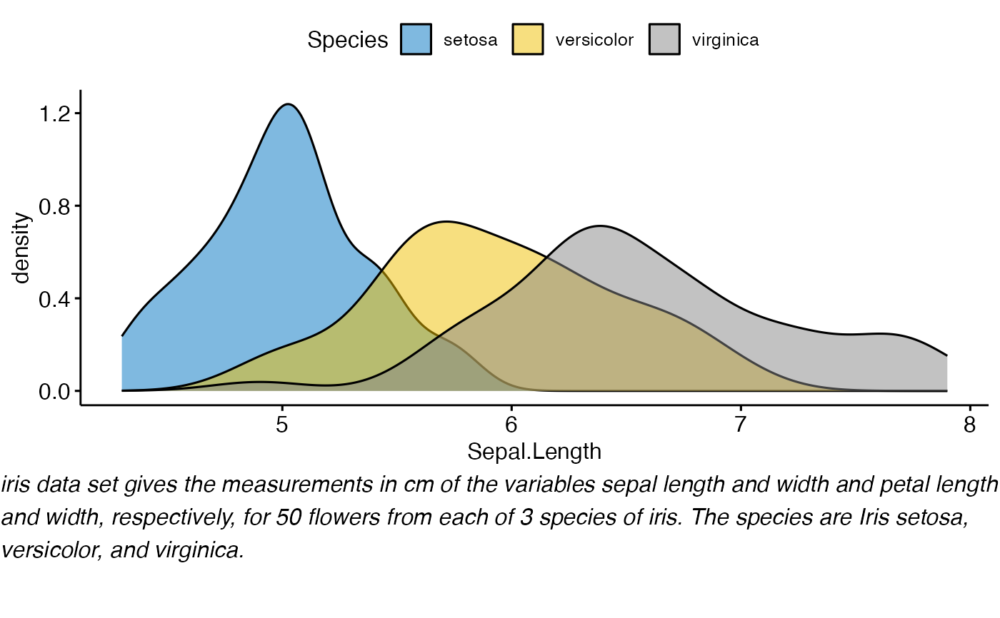

Draw a paragraph o text. Splits a long text into multiple lines (by inserting line breaks) so that the output will fit within the current viewport.
Usage
ggparagraph(
text,
color = NULL,
size = NULL,
face = NULL,
family = NULL,
lineheight = NULL
)
# S3 method for class 'splitText'
drawDetails(x, recording)Arguments
- text
the text to plot.
- color
font color, example: color = "black"
- size
font size, example: size = 12
- face
font face. Allowed values are one of "plain", "italic", "bold", "bold.italic".
- family
font family
- lineheight
Line height, example: lineheight = 2.
- x
a grid grob
- recording
a logical value indicating whether a grob is being added to the display list or redrawn from the display list.
Examples
# Density plot
density.p <- ggdensity(iris,
x = "Sepal.Length",
fill = "Species", palette = "jco"
)
# Text plot
text <- paste("iris data set gives the measurements in cm",
"of the variables sepal length and width",
"and petal length and width, respectively,",
"for 50 flowers from each of 3 species of iris.",
"The species are Iris setosa, versicolor, and virginica.",
sep = " "
)
text.p <- ggparagraph(text, face = "italic", size = 12)
# Arrange the plots on the same page
ggarrange(density.p, text.p,
ncol = 1, nrow = 2,
heights = c(1, 0.3)
)
